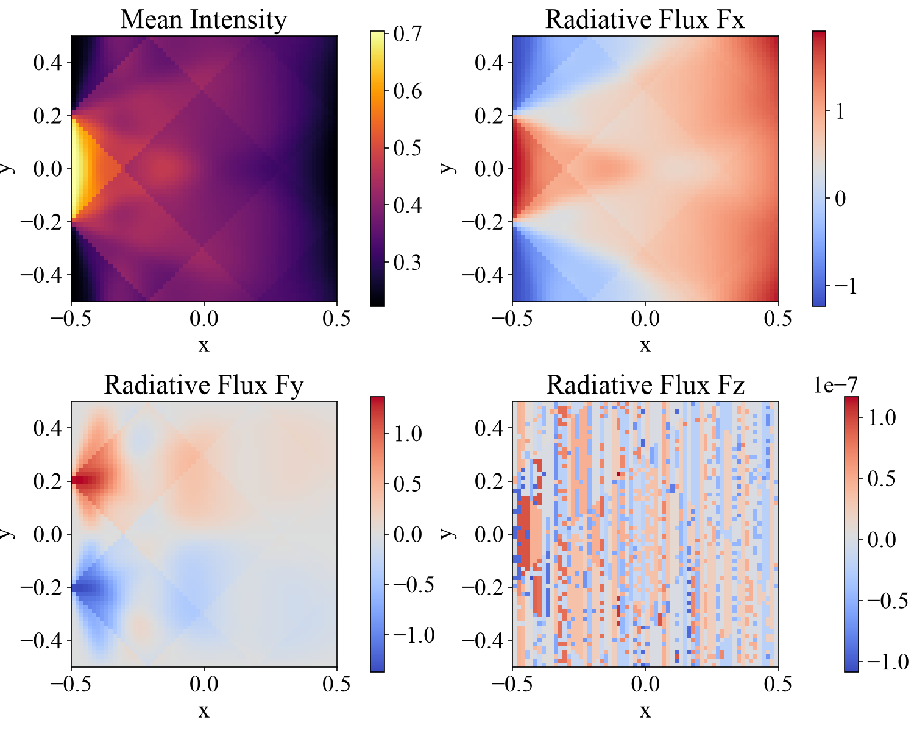

2D RT Test: Searchlight Beam
The searchlight problem is a standard test problem for radiative transfer (RT) solvers. A thin beam of light (the searchlight) is injected into the computational domain from part of the boundary, and we check the amount of numerical diffusion of the short characteristics method [Kunasz and Auer, 1988] by seeing how little the beam spreads as it propagates.
The RT solver of MISO integrates the radiative transfer equation
for each discretized direction with the short characteristics method. Here \(I\) is the intensity, \(s\) is the distance along the ray, \(\kappa\) is the absorption coefficient, and \(S\) is the source function. For the angular integration we use Carlson’s A4 quadrature (24 directions).
Location
demo/rt2d_searchlight/
Geometry
\(-0.5 \leq x \leq 0.5\)
\(-0.5 \leq y \leq 0.5\)
There is only one grid point in the \(z\) direction, so the problem is treated as a 2D problem.
Setup
We set the absorption coefficient and the source function uniformly over the whole computational domain to
They can be changed in the searchlight section of config.yaml.
Boundary Conditions
From the part of the inner boundary in the \(x\) direction (\(x = -0.5\)) with \(\sqrt{y^2 + z^2} \leq 0.2\), radiation of intensity \(I = 1\) is injected in all inward directions. The incident intensity from the other boundaries is \(0\). The \(y\) and \(z\) directions have periodic boundary conditions.
The boundary face of incidence (boundary_face), the radius (radius), and the incident intensity (incoming_intensity) can be changed in config.yaml.
Results
This demo does not evolve in time; it iterates until the radiation field converges and writes the output only once. A Python script for visualization is provided. The plots of the results are saved in demo/rt2d_searchlight/figs.
cd demo/rt2d_searchlight
python plot_data.py
We plot the mean intensity \(J = \sum_r w_r I_r\) and the three components of the radiative flux \(\bm{F} = 4\pi \sum_r w_r \bm{\mu}_r I_r\) in the \(x\)-\(y\) plane. Here \(w_r\) and \(\bm{\mu}_r\) are the weight and the direction cosine of direction \(r\), respectively. You can see the beam entering from the boundary split and travel along the discretized directions, and approach the source function value \(S = 0.5\) while being attenuated by absorption. Because this is a 2D problem, \(F_z\) is at the level of rounding error.
